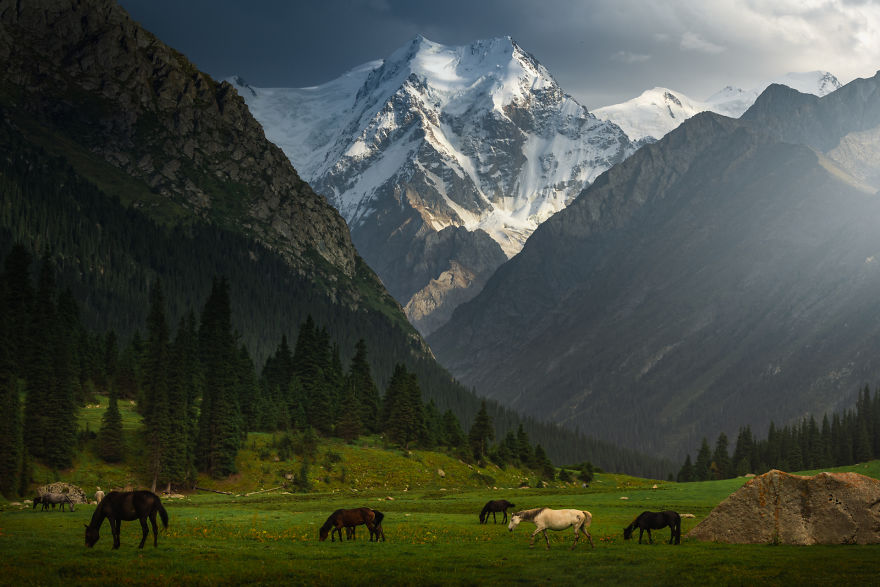
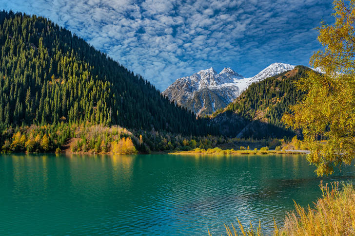

My name is Ermek, I am 21 years old and I have five siblings.
Ermek
Tilek
Aruuzat
Jibek
Aibek
Education
I graduated from high school in 2018 and I went to an international college. I studied
network communication and switching in college and
graduated in 2021 in Kyrgyzstan.
Check out College.It's a great college for programming!
Kyrgyzstan is divided into seven administrative regions:
Jalal-abat
Issykkul
Naryn
Osh
Batken
Talas
Chui
The capital of Kyrgyzstan is Bishkek, which is situated at the northern end of the
Ala-Too Range,
in the middle
of the Chui Valley, at a height of 700 – 900 meters above sea level.
Nature of Kyrgyzstan
Kyrgyzstan is an amazingly beautiful country with lots of really untouched nature and I would definitely
recommend visiting it.

A green valley with wild horses and a view on Peak Yeltsin. This is what Kyrgyzstan is
about.

Ala-Kul lake, a magical crystal clear lake turquoise-coloured lake located at an
altitude
close to 4000m.
Kyrgyzstan, country of Central Asia. It is bounded by Kazakhstan on the northwest and north, by China on the
east and south, and by Tajikistan and Uzbekistan on the south and west.